This document provides comprehensive technical documentation for the agent swarm system within the Signal trading platform. The agent system consists of specialized AI consultants that provide cryptocurrency trading analysis and recommendations through a coordinated multi-agent architecture.
For information about the core AI trading engine components (SignalOutline, CloseOutline, RiskOutline), see AI Trading Engine. For configuration of agent behavior and AI model selection, see Environment Configuration.
The agent swarm system implements a triage-based routing architecture where user queries are distributed to specialized cryptocurrency consultant agents. Each agent operates with dedicated analysis tools and maintains expertise in specific digital assets while sharing common infrastructure for market data access and AI inference.

All agents in the system share a common architectural foundation while maintaining specialized functionality. The following diagram maps the natural language agent descriptions to their actual code entities and configuration structures.

All agents share the following architectural characteristics:
| Property | Value | Description |
|---|---|---|
| Completion Engine | runner_stream_completion |
Streaming AI completion system |
| Language Mode | Всегда пиши ответ на русском языке |
Russian-language responses |
| Reasoning Level | Reasoning: high |
High-level analytical reasoning |
| Error Handling | onToolError callback |
Standardized error management |
| Message Format | Markdown text only | No HTML, files, or tables supported |
The agent tool system provides standardized interfaces for market data access across different timeframes and analysis types. Each tool category serves specific analytical purposes while maintaining consistent parameter structures.

| Tool Category | Purpose | Data Scope | Update Frequency |
|---|---|---|---|
| Signal Analysis | Primary technical analysis | 36-48 hour lookback | Real-time |
| Historical Data | Trend analysis over time | 5-30 stored calculations | 2-5 minutes |
| Market Structure | Liquidity and order flow | 2-220 hour windows | Real-time |
| Social Sentiment | Community sentiment analysis | Recent posts | On-demand |
| Raw Candles | OHLCV price action | 6-15 recent candles | Real-time |
The agent system implements a hub-and-spoke navigation model with the triage_agent serving as the central router. Navigation between agents occurs through dedicated tools that enable seamless conversation handoffs.

The triage_agent implements keyword-based routing logic to determine appropriate consultant assignment:
| Cryptocurrency | Agent Target | Trigger Keywords | Navigation Tool |
|---|---|---|---|
| Bitcoin | btc_consultant_agent |
BTC, Bitcoin, Биткоин | navigate_to_btc_consultant_tool |
| Ethereum | eth_consultant_agent |
ETH, Ethereum, Эфириум, Эфир | navigate_to_eth_consultant_tool |
| Binance Coin | bnb_consultant_agent |
BNB, Binance Coin, Binance Smart Chain | navigate_to_bnb_consultant_tool |
| Ripple | xrp_consultant_agent |
XRP, Ripple, Рипл | navigate_to_xrp_consultant_tool |
| Solana | sol_consultant_agent |
SOL, Solana, Солана | navigate_to_sol_consultant_tool |
The triage_agent serves as the central routing hub for the agent swarm system. It analyzes user queries to determine cryptocurrency interest and routes conversations to appropriate specialist agents.
Core Functionality:
System Behavior:
The btc_consultant_agent provides specialized Bitcoin trading analysis and consultation services with comprehensive technical analysis capabilities.
Market Context:
111983.6008/09/2025 17:14 +05:00Tool Arsenal:
Navigation Behavior:
triage_agent when user interest shifts to other cryptocurrenciesThe eth_consultant_agent provides specialized Ethereum trading analysis with identical tool capabilities tailored for ETH market analysis.
Market Context:
4307.81Specialized Features:
The bnb_consultant_agent specializes in Binance Coin (BNB) trading analysis and Binance Smart Chain ecosystem consultation.
Market Context:
877.69Tool Configuration:
The sol_consultant_agent provides specialized Solana (SOL) trading analysis and ecosystem consultation services.
Market Context:
214.08Analysis Capabilities:
All consultant agents maintain consistent behavioral patterns: